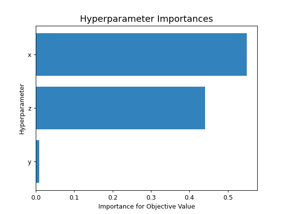

optuna.visualization.matplotlib.plot_param_importances¶
-
optuna.visualization.matplotlib.plot_param_importances(study, evaluator=None, params=None, *, target=None, target_name='Objective Value')[source]¶ Plot hyperparameter importances with Matplotlib.
See also
Please refer to
optuna.visualization.plot_param_importances()for an example.Example
The following code snippet shows how to plot hyperparameter importances.
import optuna def objective(trial): x = trial.suggest_int("x", 0, 2) y = trial.suggest_float("y", -1.0, 1.0) z = trial.suggest_float("z", 0.0, 1.5) return x ** 2 + y ** 3 - z ** 4 sampler = optuna.samplers.RandomSampler(seed=10) study = optuna.create_study(sampler=sampler) study.optimize(objective, n_trials=100) optuna.visualization.matplotlib.plot_param_importances(study)
- Parameters
study (optuna.study.Study) – An optimized study.
evaluator (Optional[optuna.importance._base.BaseImportanceEvaluator]) – An importance evaluator object that specifies which algorithm to base the importance assessment on. Defaults to
FanovaImportanceEvaluator.params (Optional[List[str]]) – A list of names of parameters to assess. If
None, all parameters that are present in all of the completed trials are assessed.target (Optional[Callable[[optuna.trial._frozen.FrozenTrial], float]]) –
A function to specify the value to display. If it is
Noneandstudyis being used for single-objective optimization, the objective values are plotted.Note
Specify this argument if
studyis being used for multi-objective optimization. For example, to get the hyperparameter importance of the first objective, usetarget=lambda t: t.values[0]for the target parameter.target_name (str) – Target’s name to display on the axis label.
- Returns
A
matplotlib.axes.Axesobject.- Raises
ValueError – If
targetisNoneandstudyis being used for multi-objective optimization.- Return type
matplotlib.axes._axes.Axes
Note
Added in v2.2.0 as an experimental feature. The interface may change in newer versions without prior notice. See https://github.com/optuna/optuna/releases/tag/v2.2.0.